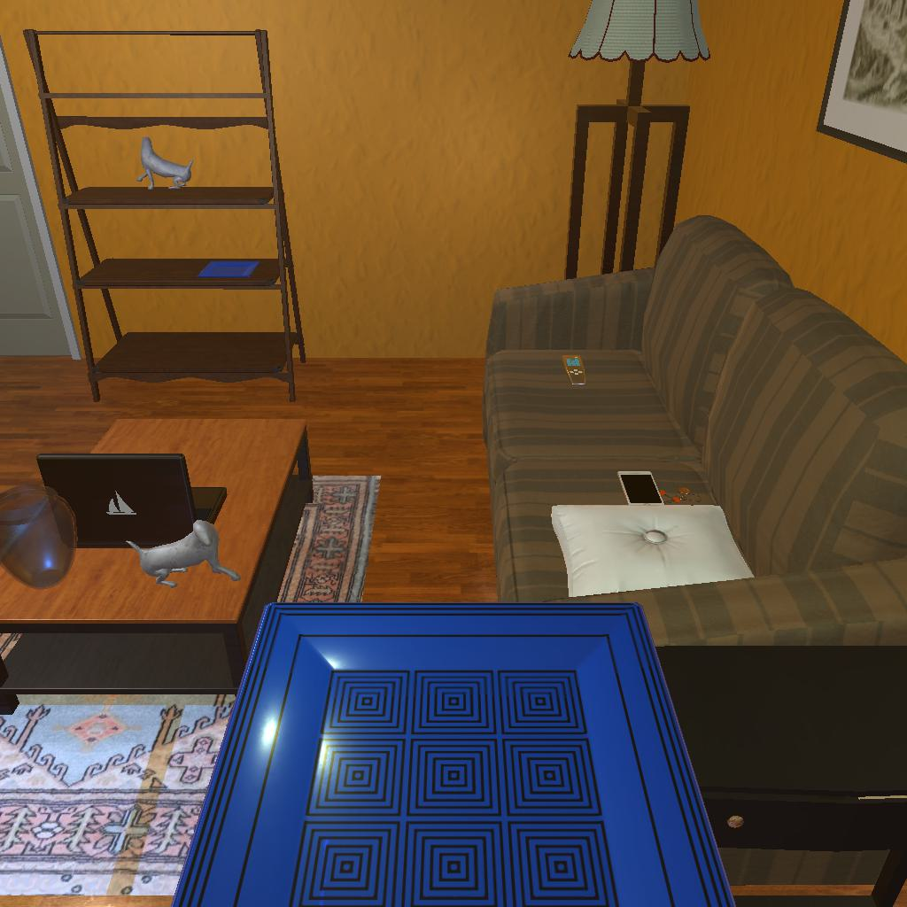

---------------------------------------------------------task: 3---------------------------------------------------------
--------------------------------------------------------------------------------------------------------------------------------------------------------------------
--------------------------------------------------------------------------------------------------------------------------------------------------------------------
Step:--------------------------------------------------------------------------14-------------------------------------------------------------------------------
----------------------------------------
VLM Prompt:
Image1:
**Instruction**
1. Analyze the provided image to identify all visible household objects, focusing on those relevant to the task description "look at plate under the floorlamp."
2. Use the analysis of the image and the task hint "The agent must find an object of the desired type, locate and turn on a light source with the desired object in-hand." to answer the question: what is the most reasonable action in the choices for the task description "look at plate under the floorlamp"?
4. Decide and write the answer using the template: The answer is: (i): , where i is the real number. If there is no desired object in the image, search every place based on **Initial Observation** to find the object. And if no one is exactly correct, choose a similar answer.
**Initial Observation**
You are in the middle of a room. Looking quickly around you, you can see armchair (1), garbagecan (1), tvstand (1), shelf (1-5), sofa (1), coffeetable (1), sidetable (1-2), drawer (1)
**Answer Choices**
(1): go to armchair 1
(2): go to garbagecan 1
(3): go to tvstand 1
(4): go to shelf 2
(5): go to sofa 1
(6): go to sidetable 2
(7): go to drawer 1
(8): go to shelf 3
(9): go to shelf 4
(10): go to shelf 5
(11): put plate 1 in/on sidetable 1
(12): use floorlamp 1
(13): examine plate 1
(14): examine sidetable 1
**Answer**
Let's think step by step by following the instructions.
----------------------------------------
----------------------------------------
Original Response:
First, we need to identify the relevant objects in the image. There is a floorlamp next to the sofa on the right side of the image, but there is no visible plate under the floorlamp.
According to the initial observation, we have multiple options to search for the plate, which could potentially be on a shelf, sidetable, or drawer. Since the task description specifically mentions "look at plate under the floorlamp," our priority is to find the plate.
None of the answer choices directly state "find plate," so we must choose the next most reasonable action based on the task hint. The hint suggests the agent must find the object (plate) and then locate and turn on a light source (floorlamp) with the object in hand.
Since there is no plate visible, we must search for it. The most logical places to look for a plate would be on shelves or a sidetable since these are common places to keep plates. Out of the given answer choices, going to the shelf with multiple levels (shelf 2, shelf 3, shelf 4, shelf 5) or the sidetable (sidetable 2) seems most reasonable.
We can eliminate choices (1), (2), (3), (5), (7), (11), (12), (13), and (14) as they do not involve searching for the plate or are unrelated to the task description.
Remaining choices are (4), (6), (8), (9), and (10), which involve going to a shelf or sidetable that could potentially hold the plate.
The answer is: (4): go to shelf 2. This choice is reasonable as it suggests looking on a shelf which could hold the desired object (plate), and it's one of the first shelves that could be investigated. If the plate is not found there, the agent can continue to search the other shelves or sidetable as necessary.
----------------------------------------
----------------------------------------
>>> Refine Original VLM Response and Get Pure Action: go to shelf 2
----------------------------------------
-----------------------------------------------------------------
Running time: 18.894233465194702 seconds
Total Money: 0.8956799999999999
-----------------------------------------------------------------
-----------------------------------------------------------------
Text Observation:You arrive at loc 4. On the shelf 2, you see a television 1, a statue 3, and a creditcard 1.
-----------------------------------------------------------------
UNSUCCEED